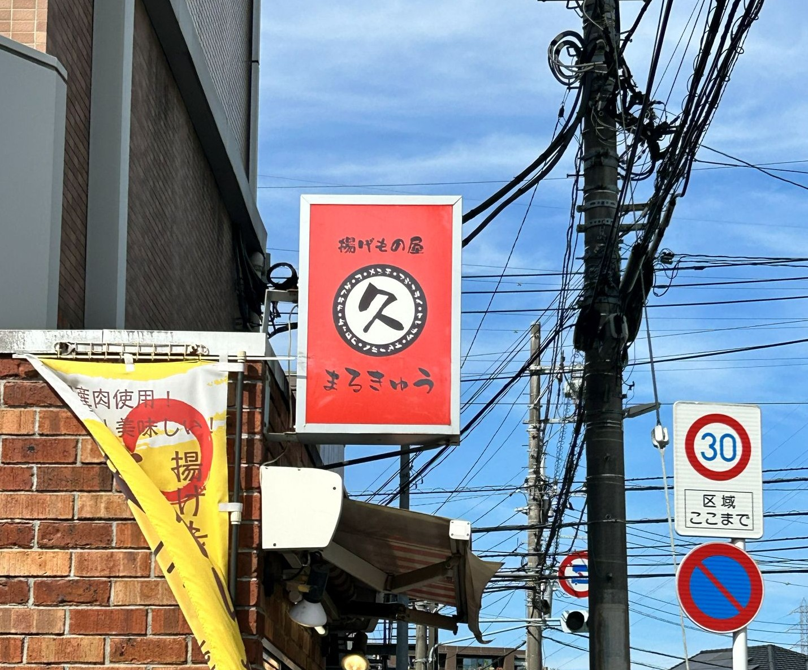
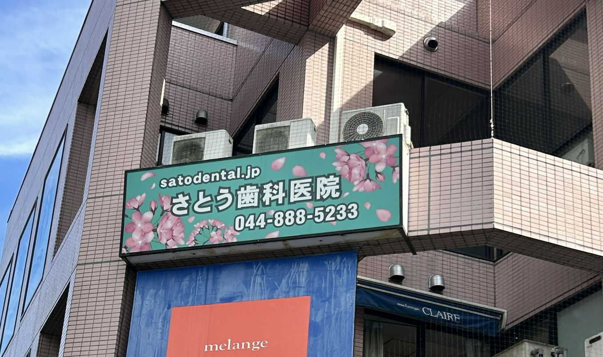
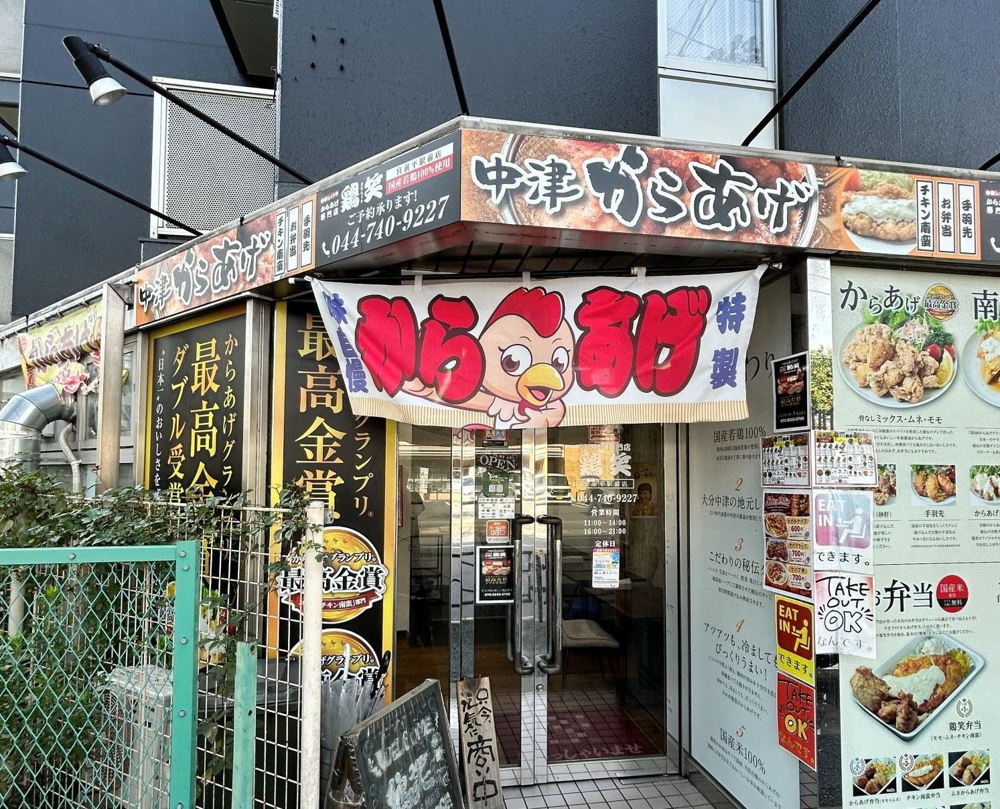
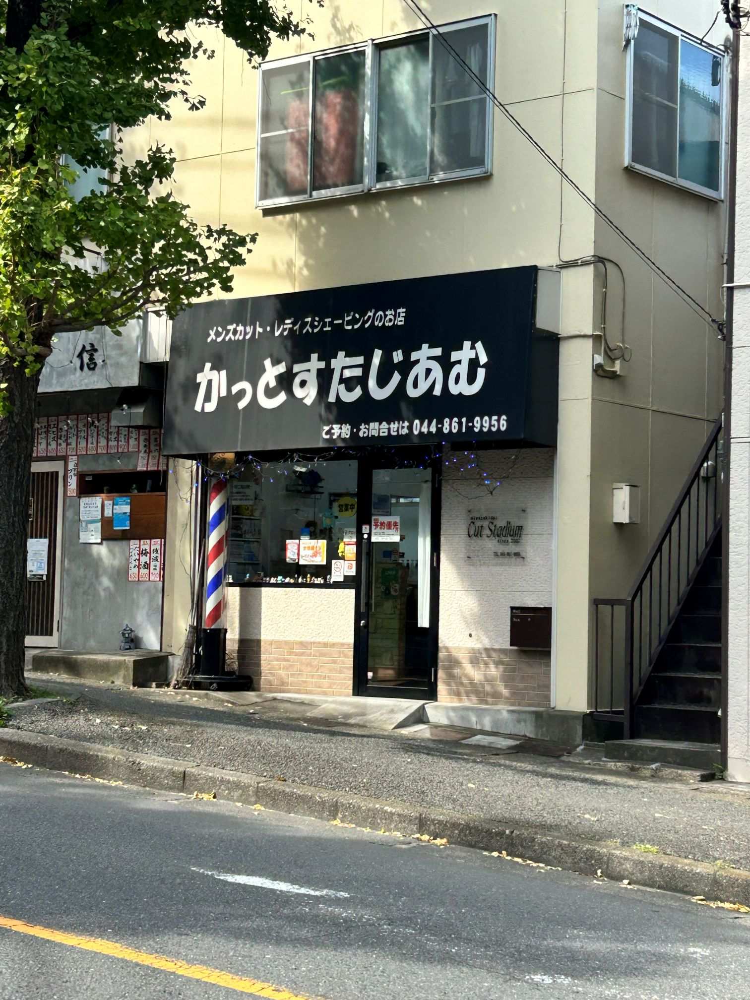
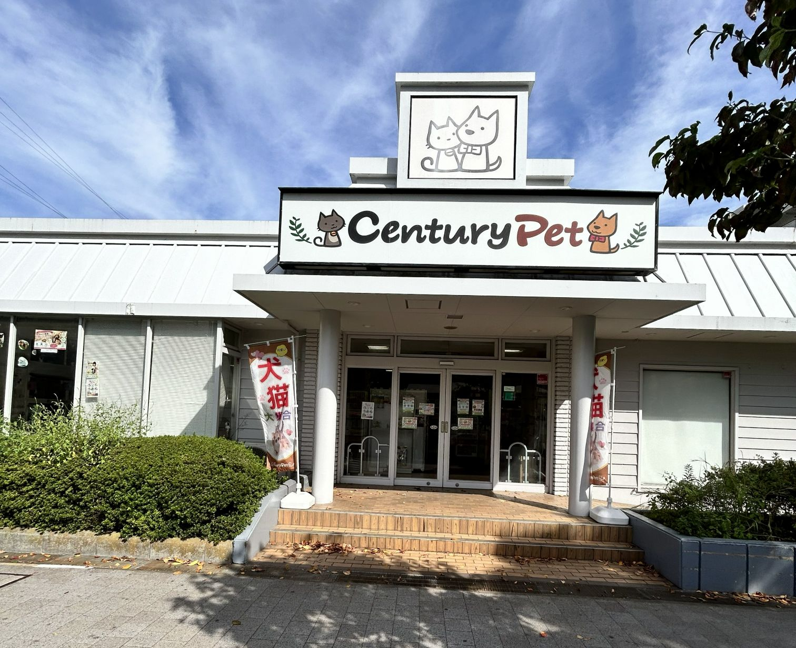

路上観察

10/17撮影
宮崎台付近の揚げ物屋さんの看板。一見シンプルな看板だがよく見てみると、
丸の黒い淵のところに「カラアゲ・メンチ・アジフライ・ヒレカツ・エビフライ・コロッケ」と書いてある。

10/17撮影
家の近く歯科の看板。歯科の看板に桜で最初は関連性がないように見えたけど、
春になると桜がきれいに咲く地域なので、そこに合わせて桜のデザインにしていると考えた。

10/17撮影
家の近くのから揚げ屋さん。このお店は前の二つなどのデザインというより、
とにかくから揚げを全面に出してアピールをしようとしていると感じた。
第ニ週

10/21撮影
家の近くの理容室。カタカナではなくあえてひらがなで書かれていて、
思わず目を奪われたのとひらがなの方が可愛い印象を受ける。
第三週

10/21撮影
ペットショップの看板。犬と猫が可愛い感じで描かれていて一目でわかるようになっている。